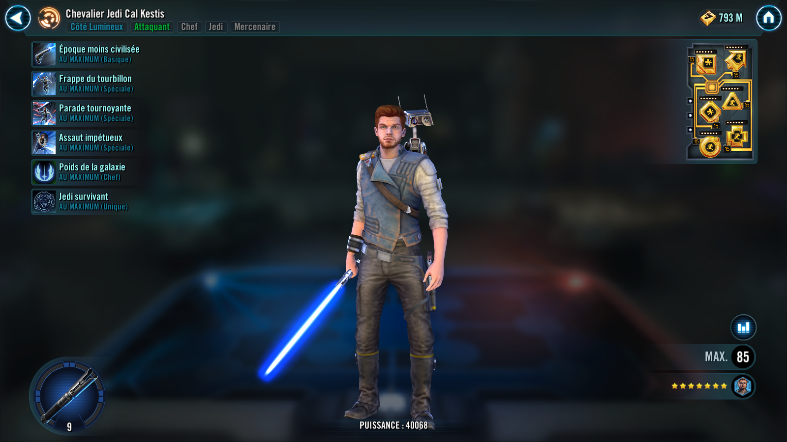
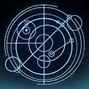

Jedi Knight Cal Kestis
Utilizing different lightsaber masteries, Jedi Knight Cal Kestis weaves between offensive and defensive stances to claim victory over his opponents
Utilizing different lightsaber masteries, Jedi Knight Cal Kestis weaves between offensive and defensive stances to claim victory over his opponents

Deal Physical damage to target enemy and dispel all buffs on them.
If it is Jedi Knight Cal Kestis' turn:
Unblock Whirlwind Slam, Windmill Defense, and Impetuous Assault for 1 turn, then Jedi Knight Cal Kestis gains a bonus turn.
During this bonus turn Jedi Knight Cal Kestis ignores taunt effects and may only use Whirlwind Slam, Windmill Defense, and Impetuous Assault.
If Jedi Knight Cal Kestis doesn't have Configuration - Double-Bladed he loses his Configuration and gains Configuration - Double-Bladed for the rest of battle and 5 stacks of Impetuous (max 30) until the end of the encounter.
Deal Physical damage and inflict Speed Down for 2 turns on all enemies.
If Jedi Knight Cal Kestis didn't have Configuration - Double-Bladed at the start of his turn:
- All allies gain Advantage for 4 turns
- Stun target enemy for 1 turn and inflict them with Armor Shred for the rest of encounter
- Daze all other enemies for 2 turns
Configuration - Double-Bladed: +50% Offense and Tenacity; +2 Speed per stack of Impetuous
Omicron Boost : While in Territory Battles: The next time Jedi Knight Cal Kestis uses Windmill Defense, he recovers 50% Health and Protection and gives all allies Protection Up (20%, stacking) for 2 turns for each use of Whirlwind Slam since the last use of Windmill Defense.
If Jedi Knight Cal Kestis did not have Configuration - Double-Bladed at the start of his turn, instead:
- Stun all enemies for 1 turn and inflict them with Armor Shred for the rest of encounter
If Jedi Knight Cal Kestis doesn't have Configuration - Dual Wield at the start of the turn, he loses his Configuration and gains Configuration - Dual Wield for the rest of battle and 5 stacks of Impetuous (max 30) until the end of the encounter.
Dispel all debuffs on all allies and call target other ally to assist. Jedi Knight Cal Kestis gains Protection Up (50%, stacking) for 4 turns which can't be copied.
If Jedi Knight Cal Kestis didn't have Configuration - Dual Wield at the start of his turn:
- Jedi Knight Cal Kestis gains Riposte for 2 turns which can't be copied, dispelled, or prevented
- Jedi allies gain Protection Up (20%, stacking) and Retribution for 2 turns
- Target Jedi ally gains a bonus turn
Configuration - Dual Wield: +100% Counter Chance and +50% Defense; enemies have -2% Offense per stack of Impetuous; when another ally attacks out of turn, this character is called to assist, limit once per turn
If Jedi Knight Cal Kestis doesn't have Configuration - Crossguard at the start of the turn, he loses his Configuration and gains Configuration - Crossguard for the rest of battle and loses 5 stacks of Impetuous.
The first time Impetuous Assault is used this encounter, instantly defeat target enemy.
Deal Physical damage to target enemy. Inflict target enemy with Ability Block and Stagger for 1 turn and inflict all enemies with Force Influence for 4 turns. All other allies gain Defense Penetration Up for 2 turns.
Configuration - Crossguard: +50% Critical Damage and Defense Penetration, -25% Defense and Speed; deal an additional 25% of this character's Max Health as damage when attacking
Omicron Boost : While in Territory Battles: Impetuous Assault deals an additional 10% of the target's Maximum Health per Jedi Knight Cal Kestis' Relic Amplifier level. After Impetuous Assault is used, Jedi Knight Cal Kestis' attacks ignore Protection and all allies gain 300% of Jedi Knight Cal Kestis' base Offense for the rest of battle.
This ability can't be used unless Jedi Knight Cal Kestis has 30 stacks of Impetuous.
Jedi allies gain +50% counter chance, Defense, and Offense.
omicron Boost : While in Territory Battles: At the start of battle, allies gain 100% Max Health and Max Protection and 300% of Jedi Knight Cal Kestis' Defense. At the start of each encounter, allies gain +25% Turn Meter and Frenzy for 2 turns. Defeated enemies can't be revived. Stacks of Impetuous persist across encounters.

Jedi Knight Cal Kestis is immune to Ability Block, Fear, and Stun.
When another Jedi ally attacks out of turn, Jedi Knight Cal Kestis recovers 10% Health.
All Jedi allies are immune to cooldown manipulation from enemies.
When a Jedi ally is inflicted with Fear, they gain Damage Immunity for 1 turn and 60% Turn Meter.
Whenever Jedi Knight Cal Kestis gains a Configuration, he gains 5 stacks of Impetuous (max 30) until the end of the encounter.
Impetuous: +1% Offense, -1% Defense; abilities have additional effects